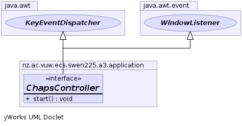

- All Superinterfaces:
- java.util.EventListener, java.awt.KeyEventDispatcher, java.awt.event.WindowListener
- All Known Implementing Classes:
- ChapsControllerImpl
public interface ChapsController
extends java.awt.KeyEventDispatcher, java.awt.event.WindowListener
An interface that represents the controller for Chaps's challenge. This class
shoudld respond to user events, direct the low-level file operations to load levels
and plugins, and tie the renderer, the maze, and the file operations together.
It should also create the root window.
-
-
